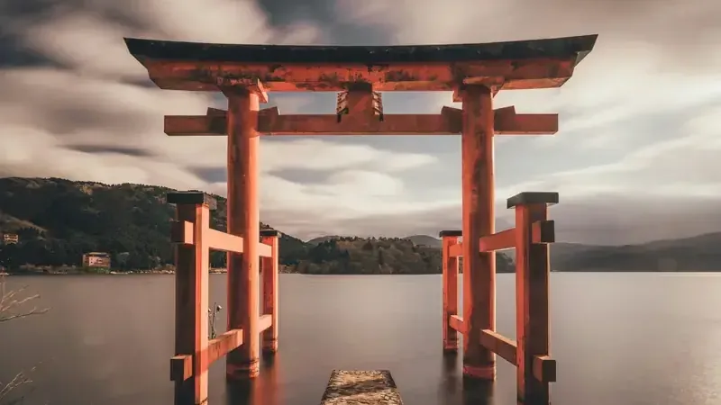

In breve
Da Shinjuku prendi il limited express Odakyu Romancecar diretto fino a Hakone-Yumoto: circa 80 minuti, tutti posti prenotati, nessun cambio. Solo andata costa circa 2.470 ¥ (1.270 ¥ di biglietto + 1.200 ¥ di posto). Se dormi vicino alla stazione di Tokyo o hai il JR Pass, è più veloce lo Shinkansen fino a Odawara (circa 35 minuti) più il treno locale Hakone Tozan (circa 15 minuti). Se userai funivia, battello e bus, compra l'Hakone Freepass.
I percorsi a confronto
| Percorso | Durata | Prezzo (solo andata) | Ideale per |
|---|---|---|---|
| Odakyu Romancecar Shinjuku → Hakone-Yumoto | ~80 min, diretto | 2.470 ¥ (1.200 ¥ di posto in più rispetto al biglietto o al Freepass) | Quasi tutti, soprattutto da Shinjuku/Shibuya |
| Odakyu express + locale Shinjuku → Odawara → Yumoto | ~2 h, 1–2 cambi | 1.270 ¥ (incluso nel Freepass) | Risparmiare col Freepass |
| Shinkansen Tokyo/Shinagawa → Odawara → Yumoto | ~35 min + ~15 min | circa 3.300 ¥ fino a Odawara (Kodama non riservato) + treno locale | Chi dorme vicino a Tokyo Station, chi ha il JR Pass |
| Bus autostradale Shinjuku → zona lago Ashi | ~2–2,5 h, dipende dal traffico | circa 2.000–2.500 ¥ | Andare dritti al lago Ashi con le valigie |
Prezzi indicativi (novembre 2026, tariffe Odakyu e JR Central), possono cambiare: controlla sempre prima di partire.
Conviene l'Hakone Freepass?
L'Hakone Freepass (Odakyu) include andata e ritorno Odakyu da Shinjuku e corse illimitate per 2 o 3 giorni su treno Hakone Tozan, funicolare, Hakone Ropeway, battello sul lago Ashi e quasi tutti i bus locali. Da Shinjuku costa 7.100 ¥ (2 giorni) o 7.500 ¥ (3 giorni); da Odawara 6.000 ¥ / 6.400 ¥. Il posto sul Romancecar non è incluso: aggiungi 1.200 ¥ a tratta.
Regola pratica: se fai il giro completo (treno, funicolare, funivia, battello, bus) il Freepass si ripaga, perché solo funivia e battello costano più di 3.000 ¥ a tratta. Se vai solo alle terme di Hakone-Yumoto e torni, compra i biglietti normali. Si compra sul sito e nell'app Odakyu/EMot e nelle stazioni Odakyu; non si può caricare su Suica o Pasmo. Puoi anche prenotarlo online in anticipo.
Il giro di Hakone, passo per passo
- Hakone-Yumoto → Gora col treno di montagna Hakone Tozan (tornanti nel bosco, circa 40 minuti).
- Gora → Sounzan in funicolare (circa 10 minuti).
- Sounzan → Owakudani → Togendai con la Hakone Ropeway: fumarole, uova nere e, nelle mattine limpide, il Monte Fuji.
- Togendai → Moto-Hakone col battello sul lago Ashi; a piedi fino al torii del santuario di Hakone nell'acqua.
- Moto-Hakone → Hakone-Yumoto in bus (circa 35–40 minuti), poi il treno per Tokyo.
Con il JR Pass
Il JR Pass copre lo Shinkansen Tokyo → Odawara (Kodama e Hikari, non Nozomi), ma non il Romancecar Odakyu né i trasporti dentro Hakone. Col pass vai fino a Odawara e compra il Freepass da Odawara (6.000 ¥). Approfondisci in Conviene il JR Pass? e nella guida allo Shinkansen.
Errori da evitare
- Salire sul Romancecar con solo il Freepass o la carta IC: serve anche il biglietto del posto. Nei weekend e nella stagione del foliage si esaurisce, prenotalo presto.
- Fare il giro al contrario nel pomeriggio: il Fuji si vede meglio la mattina e le code per funivia e battello crescono dalle 11.
- Trascinare le valigie lungo il giro: spediscile con un servizio di consegna bagagli (takkyubin) o lasciale negli armadietti di Hakone-Yumoto.
- Fare tutto in una giornata di corsa: una notte in ryokan con cena e onsen è la vera Hakone.
- Tatuaggi: molti onsen pubblici ancora non li accettano. Cerca bagni tattoo-friendly o una camera con bagno privato.
Consigli
- Siediti sul lato destro del Romancecar da Shinjuku per avere più probabilità di vedere il Fuji vicino a Odawara; i posti panoramici in testa al treno GSE finiscono per primi.
- Hakone e i Cinque Laghi del Fuji sono zone diverse: per Kawaguchiko leggi Monte Fuji in giornata.
- Paga le piccole tratte con Suica o Pasmo se non compri il Freepass.
- Vuoi l'onsen in camera? Confronta i ryokan di Hakone.
Organizza il viaggio a Hakone
Alcuni link sono affiliati: se prenoti tramite loro non paghi nulla in più e aiuti 687 a restare gratuito.
Da Tokyo a Hakone, pronto per quel giorno.
In 687 Japan Hakone è una tappa del viaggio: il treno giusto in base a dove dormi, il giro nell'ordine giusto e la mappa offline. Se il vento chiude la funivia o un'allerta cambia i piani, NOW ricostruisce il resto della giornata.
Fonti
- Odakyu Electric Railway (Romancecar)
- Hakone Navi (Odakyu Hakone, Freepass e avvisi)
- JR Central (Shinkansen Tokaido)
- Hakone Tourism Association
Verificate su questi siti ufficiali a novembre 2026. Prezzi e regole possono cambiare: controlla sempre prima di partire.